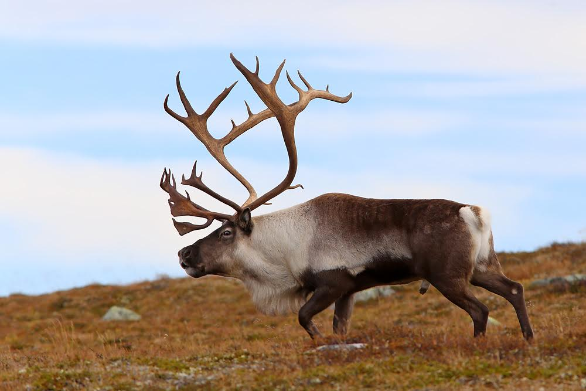

Min inspirasjon
Jeg er glad i natur og friluftsliv. Det fører til at jeg liker å drive med jakt, fiske, kanoturer, fotturer og skiturer. Til alle disse aktivitetene er det en fellesnevner; nemlig naturfoto. Er jeg for eksempel på kanotur er jeg stadig på utkikk etter fine motiver. For meg høyner dette turopplevelsen. Naturfoto har mye av de samme elementene i seg som jakt. Skal man fotografere dyr handler det ofte om å snike seg innpå dyret, eller å sitte i kamuflasje slik at dyret ikke merker ditt nærvær. Nettopp dette gjør dyrefotografering spennende for meg. Landskapsfotografering er også spennende, men har en litt annen karakter. Her gjelder det å oppdage eller oppsøke motivene, og være på riktig sted til riktig tid når lys og alt annet stemmer.
Jeg har alltid hatt en forkjærlighet for Forollhogna nasjonalpark. Her er det rike muligheter for flotte fotomotiver, jakt, fiske og fotturer. Her finner man landets flotteste villreinnstamme, ofte kalt Hognarein. Jeg har vært på mange fototurer etter villreinen, og det er alltid spennende å se om man finner dyra, og om det blir noen fine bilder.

Ved fjellet Forollhogna finnes det områder med kalkrik grunn.
Dette gir svært gode vekstforhold for fjellblomster tidlig på sommeren, noe som kan gi flotte
blomsterbilder med fjellandskap i bakgrunnen.
Et annet fjellområde jeg liker å fotografere i er Dovrefjell. I tillegg til flotte fjellområder finnes det moskus og fjellrev her, som begge er flotte fotomotiv. Ved fotografering av moskus må man være forsiktig, da den kan være farlig for mennesker. Fjellreven er landets mest sjeldne dyreart, men det pågående avlsprosjektet ser heldigvis ut til å berge arten fra utryddelse.
Jeg finner også inspirasjon i å fotografere mennesker i naturen. Dette kan være bilder fra turer man har vært på. Et bilde av noen som sitter rundt et kveldsbål ute i villmarken kan også være et godt naturbilde.